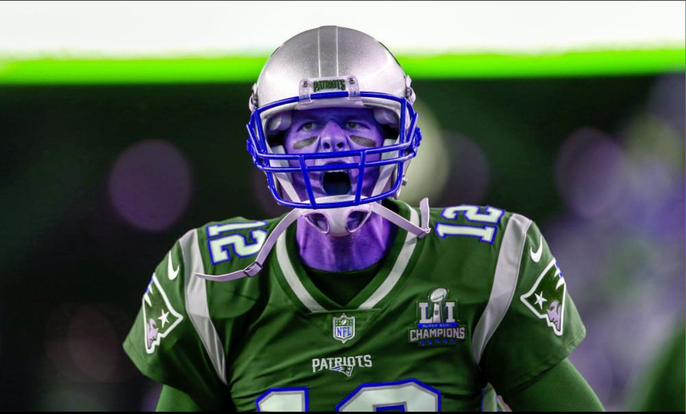
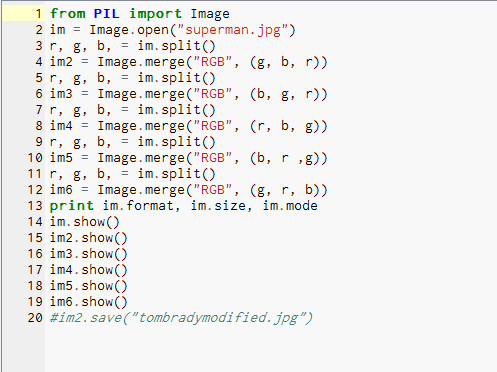
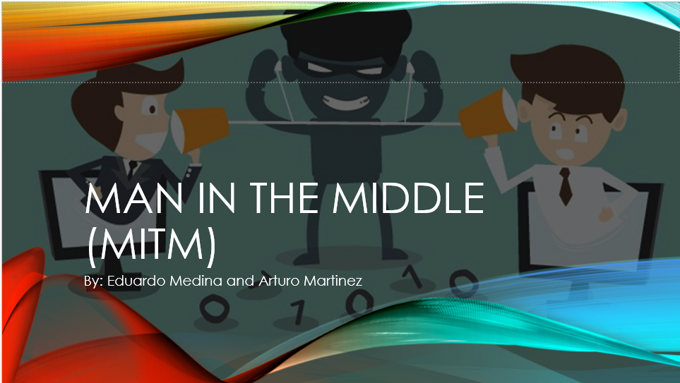
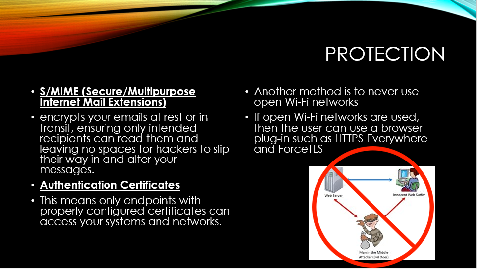
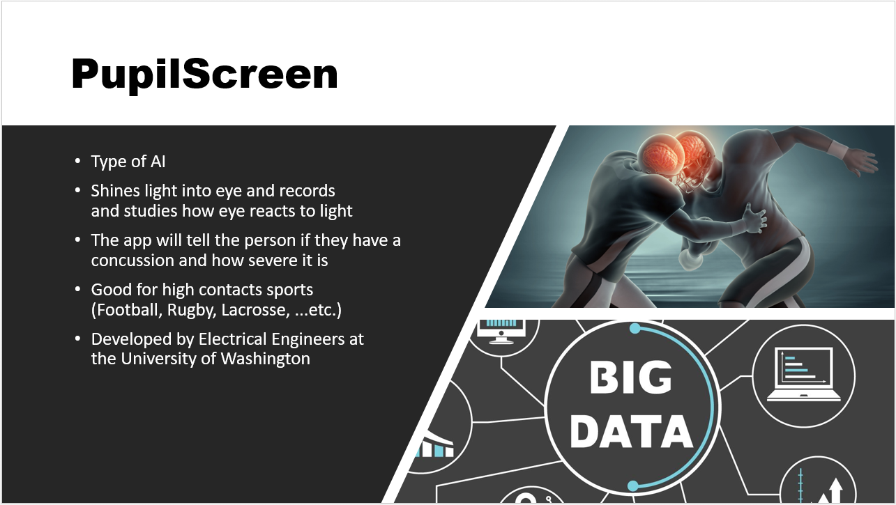
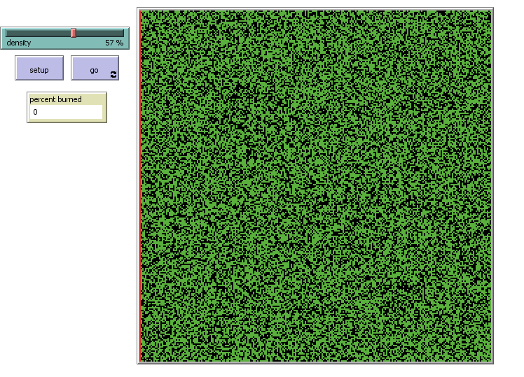
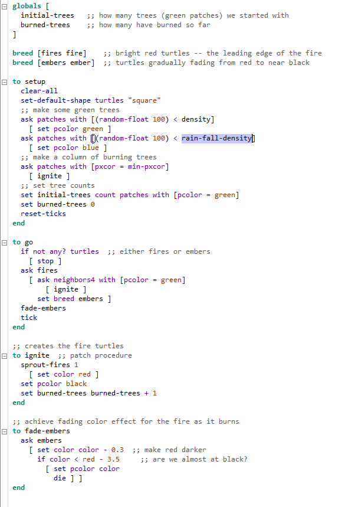
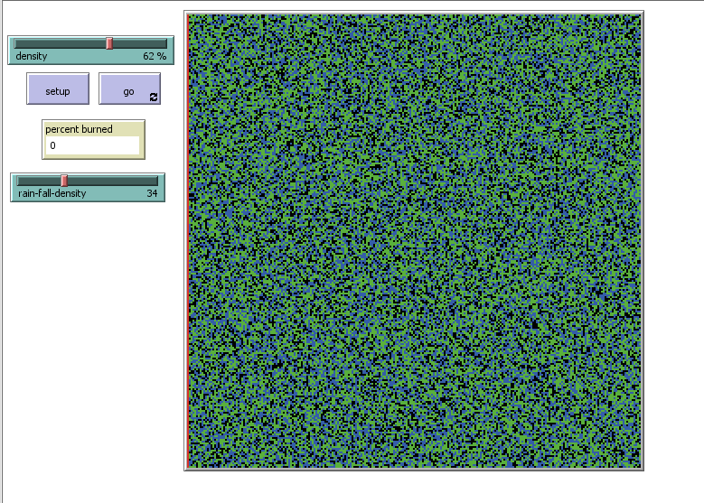
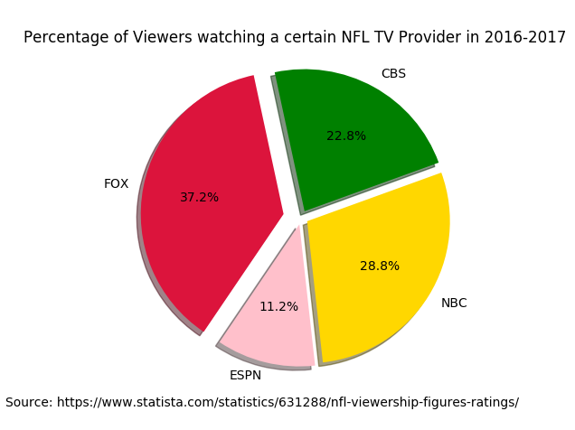
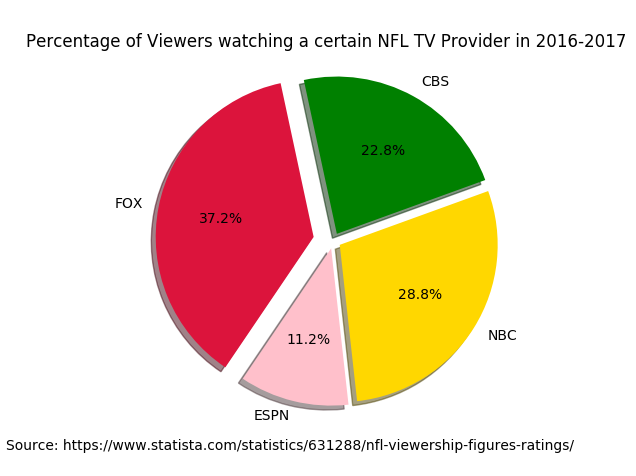

Home
Portfolio
About Me
This is my Portfolio Page!


This game Zombie Warfare was designed in scratch as a project for our AP CSP class.
This experience was very fun and a new experience. I am a long time video gmame player and
it was a new experience to actually create my own game. My group hit some speed bumps while making
this game but, we overcame them and created a really fun and creative game. Some of the troubles my group and I ran
into was the main zombie boss attracting twoards the main character. Since the main
character is constantly being mnoved by the user, the zombie boss can not go to one
single spot. Also my group and I attempted to versioning but since we could not could at the same
time versioning would get overly complicated.. My game had a logiocal and mathmatical algorithm in it. In which
the main character can move in a ny direction but, when touching another object it would signal game over.
This algorithm had both math and logic in it. If i were to go back and fix it I
would add shooting to the game. This would take more algorithms which, after making this game I understand more and
I feel my group and I would be able to achieve it.
STAT KINGS PROJECT


 Stat Kings Game
Stat Kings Game
This Stat Kings App was created in order to keep track of athlete's stats. This
game was programmed on another drag and drop style program, the
name of the program is MIT App Inventor. As an athlete this game directly
affects me. I understand the difficuilty of trying to keep track of your own stats.
The problems that arose with programming this game was the user interface.
It was hard to keep the boxes spaced apart but, still accessable on the same screen.
Also another difficult task was keeping the ESPN them playing in the background
of the game. Over all my partner Ryan and I, both being athletes,
had a fun and creative time making this game. The final product turned out to be
better than the expectations we had set in the beginning.
P.S. A California Congresswoma even tested out the App, and she enjoyed it very
much and set it was a job well done.
IMAGE MANIPULATION PROJECT


My partner and I chose to manipulate a picture of Tom Brady. We manipulated the
original picture by inverting the RGB scale. The code for the inversion of the RGB
scale was created in python. The way my partner and I made this possible was by choosing
two or more colors on the RGB scale to invert. It is possible to have more than one
outcome, depending on the order you are swutching that scale. Creating this code was a
fun experince because i have never delt with image manipulation. The
process was difficult yet a great learning experince. The great part about the code was
you can manipulate any image.
MALWARE PRESENTATION


My partner Arturo and I chose to do our malware presentation on the man
in the middle attack. Malware, is software that is intended to damage or disable computers
and computer systems.The man in the middle attack is an attack in which a hacker
intercepts and can decrypt messages sent between two servers/ people. The hacker can
acheive this by creating a fake public key so the hacker can then intercept and decrypt
the messages and then relay them to the recipeint. From making this presentation I
learned how to prevent from being the victim of a Man-in-the-middle Attack or any
malware. What suprised me the most, and was a real eye opener, was how many diffrent
kinds of malware there really are, and also the histor of malware is fascinating.
BIG DATA PRESENTATION

In the big Data presentation, my subject was Pupil Screen. Big data is
extremely large data sets that may be analyzed computationally to reveal patterns,
trends, and associations, especially relating to human behavior and interactions.
Pupil screen is an application that scans the user's retinas, and can determine if
they are concussed. This app is especially used for athletes who play contact
sports. The application can be used in real time during a game or practice and
can give the user instant results. The application falls under the big data category
because it stores a vast amount of data. Whenever a retina is scanned, it stores that
information about the user's retina and uses it as a reference for later use.
SIMULATION MODIFICATION



A simulation is an imitation of a real-world situation or process.In this
case, the simulation was how the density of wood in a forest is directly correlated
to how much a fire burns the forest. The simulation is neccesary for this because
setting a real forest on fire would destroy an actual ecosystem. Therefore a simulation
was developed to simulate a fire burning in a forest. The modification I made to the
simulation was that I made rain fall a factor in the simulation. So, now a user can
control how dense the forest is and how much rainfall there is. The rainfall puts out
the fire and the denser the forest is the more percent the fire will burn.
DATA ANALYSIS
 
For the Data analysis project, my partner, Jonathon, and I were
tasked with analyzing a set of data and making a chart to represent the data.
So, my partner and I chose to analyze data for how many viewers each NFL game
recieved in the 2016-2017 season. The goal was to represent the data with a pie
chart to see which TV station had the most viewers. We started with placing all
the data in an Excel sheet. Then we got the total number of viewers for the entire
season, then we split the viewers up ito categories by TV station. Once we had a
percent of viewers out of total viewers for all the TV stations, we plugged the
numbers into our code created in python. The TV station with the biggest portion
is the TV station that had the most NFL viewers in the 2016-17 NFL season.

For the Data analysis project, my partner, Jonathon, and I were
tasked with analyzing a set of data and making a chart to represent the data.
So, my partner and I chose to analyze data for how many viewers each NFL game
recieved in the 2016-2017 season. The goal was to represent the data with a pie
chart to see which TV station had the most viewers. We started with placing all
the data in an Excel sheet. Then we got the total number of viewers for the entire
season, then we split the viewers up ito categories by TV station. Once we had a
percent of viewers out of total viewers for all the TV stations, we plugged the
numbers into our code created in python. The TV station with the biggest portion
is the TV station that had the most NFL viewers in the 2016-17 NFL season.
CSS MEANING
CSS is a style sheet in which it changes the layout, colors, or font
of a website. As you can see, the CSS in my website changed the back ground color
to Maroon and the main headings Gold.